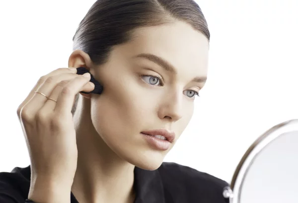

Основы макияжа

5 правил базового макияжа:
- Соблюдай очередность нанесения средств: если начать с помады, а тональный крем оставить “на десерт”, велика вероятность испортить мейкап. Сухие средства (например, рассыпчатые румяна) всегда наносят поверх кремовых, но лишь после того, как они впитаются.
- Делай тщательную растушевку. Небрежная растушевка – настоящее бьюти-табу! Это особенно касается средств для контуринга. Для растушевки румян и хайлайтера лучше всего использовать большую пушистую кисть, а для растушевки теней – маленькую плоскую кисть.
- Учитывай тип кожи. Жирной обязательно нужна косметика с матирующими компонентами, иначе она быстро начнет блестеть, а сухая требует увлажнения. Чувствительной коже важен максимально гипоаллергенный состава. Проблемной в обязательном порядке понадобятся корректор и/или консилер
- Следи за сочетаемостью оттенков. Сделать это проще, чем кажется – спасибо палеткам!
- Не все тренды одинаково хороши. Хотя бы по той простой причине, что не все они подойдут твоему типу внешности или кожи.
Зная, как правильно наносить макияж на лицо, можно не только подчеркнуть достоинства, но и замаскировать мелкие недочеты своей внешности, представая перед публикой элегантной персоной с хорошим вкусом. Для нанесения косметических средств многие пользуются услугами салонов красоты, однако, не у всех есть время и финансовая возможность посещать профессионального визажиста. Чтобы выглядеть свежо и привлекательно, необходимо научиться самостоятельно ухаживать за кожей, создавая естественный, ненавязчивый дневной или вечерний облик.
Для начала следует приобрести косметику и средства для ее применения. Лучше покупать товары у проверенных брендов и не ориентироваться на низкие цены. Дешевые продукты могут содержать некачественные компоненты и часто вызывают проблемы с кожей.
Стоит взять во внимание тон и тип собственных кожных покровов, особенности силуэта, цвет волос и проанализировать наиболее частые мероприятия в вашей повседневности
Если соблюдать правильную последовательность действий – можно обеспечить оптимальную стойкость косметических средств, исключить смазывание или смешение слоев.
Понятие также именуют как скульптурирование. Это техника коррекции с помощью косметических препаратов с целью скрытия недостатков, придания выразительности, расставления акцентов на достоинствах. В основе лежит игра со светотенью, когда высветляются одни зоны и затемняются другие. Она подходит девушкам, которые хотят изменить определенные части – широкую челюсть, высокий лоб, придать объем, убрать темные круги под глазами и т.д.
Данный метод не является элементом ежедневного макияжа. Это сложный и долгий процесс, требующий умения и большого количества расходных материалов. Его рекомендуют в случаях, когда необходимо добиться безупречного внешнего вида: на торжественных мероприятиях, свадьбе, выпускном, при фото и видеосъемке.
Для начала следует приобрести косметику и средства для ее применения. Лучше покупать товары у проверенных брендов и не ориентироваться на низкие цены. Дешевые продукты могут содержать некачественные компоненты и часто вызывают проблемы с кожей.
Стоит взять во внимание тон и тип собственных кожных покровов, особенности силуэта, цвет волос и проанализировать наиболее частые мероприятия в вашей повседневности
Если соблюдать правильную последовательность действий – можно обеспечить оптимальную стойкость косметических средств, исключить смазывание или смешение слоев.
Понятие также именуют как скульптурирование. Это техника коррекции с помощью косметических препаратов с целью скрытия недостатков, придания выразительности, расставления акцентов на достоинствах. В основе лежит игра со светотенью, когда высветляются одни зоны и затемняются другие. Она подходит девушкам, которые хотят изменить определенные части – широкую челюсть, высокий лоб, придать объем, убрать темные круги под глазами и т.д.
Данный метод не является элементом ежедневного макияжа. Это сложный и долгий процесс, требующий умения и большого количества расходных материалов. Его рекомендуют в случаях, когда необходимо добиться безупречного внешнего вида: на торжественных мероприятиях, свадьбе, выпускном, при фото и видеосъемке.